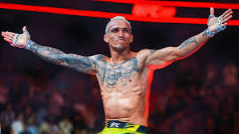

Jon Jones: Jon "Bones" Jones, a name synonymous with dominance in mixed martial arts, elicits a spectrum of reactions. His unparalleled skill set, blending unorthodox striking with devastating wrestling, has cemented his legacy. From his record-breaking light heavyweight reign to his recent heavyweight ascent, Jones's technical mastery is undeniable. However, his career is also marked by controversy, casting a shadow over his achievements. Yet, even his detractors acknowledge his exceptional talent. Whether hailed as the GOAT or viewed with skepticism, Jones's impact on MMA is indelible, a complex tapestry of brilliance and turbulence.- Basically the lebron of Fighting.
Georges St-Pierre: Georges St-Pierre, "GSP," reigned as a dominant MMA champion. His disciplined approach, combining elite striking and wrestling, set him apart. He meticulously studied opponents, adapting his strategy for each fight. GSP's dedication to continuous improvement and his focus on technical mastery solidified his legacy as a true icon of the sport. His calculated, well-rounded fighting style made him a legend.
Anderson Silva: Anderson Silva, "The Spider," redefined mixed martial arts with his mesmerizing striking and uncanny agility. His reign as UFC middleweight champion, marked by a record-breaking 16 consecutive victories, cemented his legendary status. Beyond the statistics, Silva's artistry in the octagon, his unpredictable movements and devastating knockouts, captivated audiences worldwide. Though his career faced later challenges, his impact on MMA's evolution remains undeniable, leaving a legacy of unparalleled skill and unforgettable moments.
Khabib Nurmagomedov: Khabib Nurmagomedov's legacy extends far beyond his undefeated 29-0 record in mixed martial arts. He represents a powerful blend of discipline, cultural heritage, and unwavering dedication. Born in the rugged mountains of Dagestan, Russia, Khabib's upbringing instilled in him a strong work ethic, honed through years of wrestling and combat sambo training.
His dominance in the UFC lightweight division was characterized by his unparalleled grappling and relentless pressure. He didn't just win fights; he imposed his will, dismantling opponents with a style that was both brutal and masterful. Beyond his fighting prowess, Khabib's character resonated with fans worldwide. He remained grounded, prioritizing family, faith, and his community.
The profound influence of his father, Abdulmanap Nurmagomedov, who served as his coach and mentor, shaped his career and personal philosophy. His emotional retirement following his father's passing underscored the deep bond they shared. Khabib's post-fighting endeavors have focused on coaching, business ventures, and promoting the sport of MMA, ensuring that his influence continues to inspire future generations. He is more than a fighter, he is a role model. - AKA my personal GOAT
Islam Makhachev: Islam Makhachev's rise in the UFC's lightweight division is a testament to unwavering dedication and a refined fighting style. Rooted in Dagestani wrestling, his grappling prowess is formidable, suffocating opponents with relentless pressure and precise submissions. This foundation, honed alongside mentor Khabib Nurmagomedov, is complemented by increasingly sharp striking. Makhachev's strategic approach, prioritizing control and calculated aggression, reflects a deep understanding of mixed martial arts. He embodies a disciplined and focused mindset, evident in his consistent performances. His journey, marked by both dominant victories and calculated progression, has solidified his position as a dominant force and a champion in the lightweight division. - Currently the best Lightweight in the World.
Daniel Cormier: Daniel Cormier's legacy transcends mere wins and losses. He's a fighter defined by resilience. An Olympian, he translated wrestling prowess into MMA dominance, becoming a UFC double champion. His battles with Jon Jones, though bitter, cemented his place in history. Beyond the octagon, Cormier's commentary and personality resonate, making him a beloved figure. He embodies sportsmanship, even amidst fierce rivalries. His journey, marked by both triumph and heartbreak, showcases a champion's heart. Cormier's impact extends beyond fighting; he's a role model, a commentator, and a true ambassador for MMA.
Conor McGregor: Conor McGregor, "The Notorious Tap machine," revolutionized MMA. His flamboyant persona and striking prowess captivated global audiences. He achieved UFC double-champion status, showcasing exceptional skill. Beyond fighting, his business ventures and outspoken nature cemented his place as a cultural icon, though controversy often shadows his success.
Demetrious Johnson: Demetrious "Mighty Mouse" Johnson's grappling is a testament to his comprehensive martial arts mastery. Renowned for his fluidity and technical precision, Johnson seamlessly blends wrestling and Brazilian Jiu-Jitsu. His rapid transitions, coupled with exceptional positional awareness, make him a formidable grappler. He utilizes his speed and agility to secure takedowns and maintain dominant positions. Furthermore, his submission game is diverse, showcasing a deep understanding of leverage and technique. Recent successes in IBJJF competitions, and his progression to black belt, prove his dedication to grappling. Johnson's grappling prowess is a key component of his legendary MMA career. - A well rounded fighter

Charles Oliviera: Charles Oliveira's journey in the UFC is a testament to resilience. From early struggles to becoming a lightweight champion, his career showcases remarkable evolution. He's renowned for his exceptional Brazilian Jiu-Jitsu, holding numerous submission records. Beyond grappling, his striking has significantly improved, making him a well-rounded threat. Oliveira's ability to overcome adversity and his exciting fighting style have solidified his place as a fan favorite and a top competitor in the lightweight division.
Dustin Poirier: Dustin Poirier has solidified his place as a top-tier lightweight in the UFC. Known as "The Diamond," he's renowned for his exceptional striking, resilience, and unwavering determination. Poirier's career is marked by thrilling fights and a consistent pursuit of excellence. Beyond his fighting prowess, he's admired for his philanthropic efforts through "The Good Fight Foundation," showcasing a commitment to giving back. His journey reflects a blend of fierce combat and genuine character, making him a respected figure in mixed martial arts.